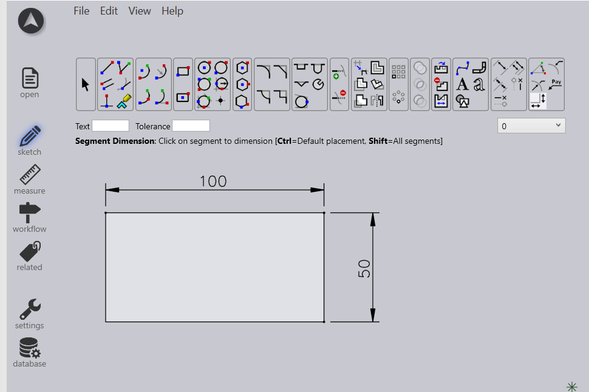
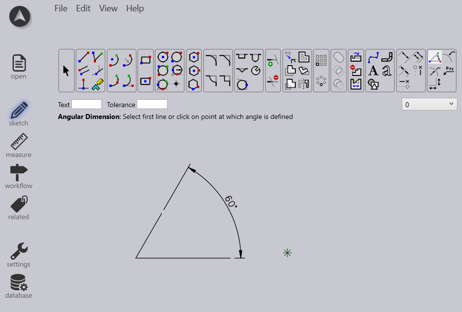
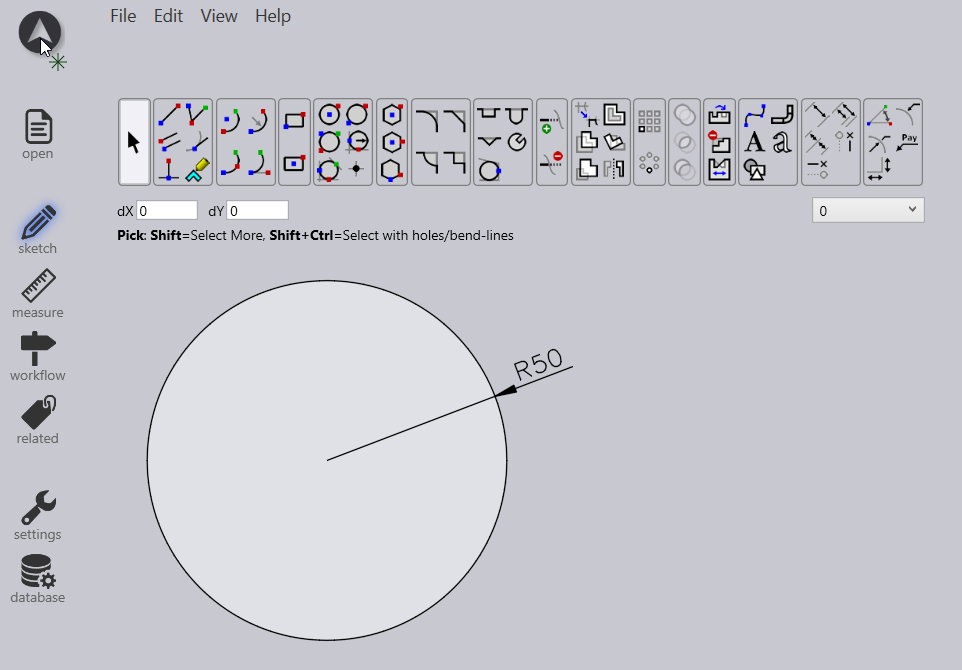
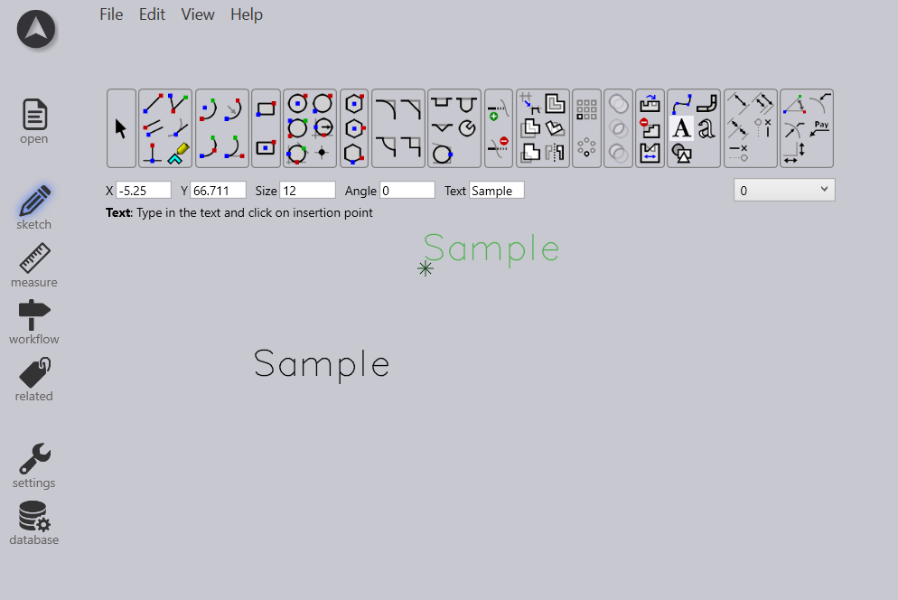

Dimensioning and Annotation
-
Dimensioning and annotation in CAD are essential for conveying critical information about designs. Dimensioning includes linear, angular, radial, and diameter dimensions, ensuring accurate measurements for manufacturing and assembly.
-
Annotations provide additional details such as notes, GD&T symbols, surface finishes, and welding specifications, enhancing clarity and understanding, following industry standards like ANSI and ISO ensuring consistency and compatibility across designs.
Linear /angular/radial Dimension Tool
Measure and annotate horizontal, vertical, or aligned distances. User Interface
-
Icon for each dimension tool or keyboard short cut Interaction
-
Click on the endpoints of the line or object you want to dimension to specify the direction and length of the dimension line. This works for Angles and radii similarly.
-
Move the cursor to position the dimension line, then click to place the dimension.
-
Optionally, double-click on the dimension text to edit the numerical value.

Text Tool
Add text annotations to drawings by specifying text content, font, size, and placement.
User Interface:
-
An icon on the toolbar, with parameters allowing users to specify text content, font, size, alignment, and placement via mouse click or coordinate input.
Interaction:
-
Click on the drawing area to set the insertion point
-
Type the text content in a dialog box, customize text properties like font, size, and style
-
Position the text by dragging or using precise coordinate input, with real-time visual feedback showing the text as it will appear on the drawing.
